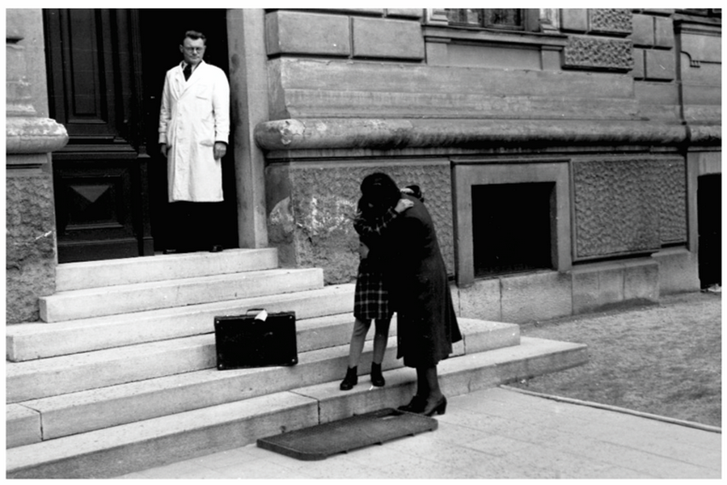
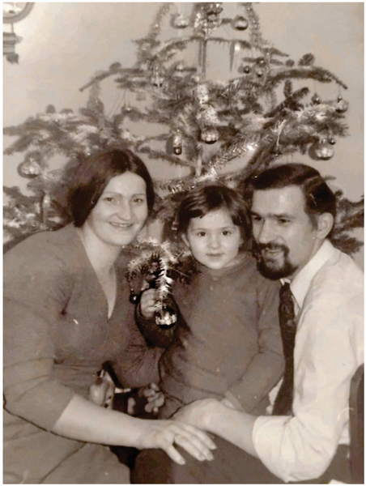
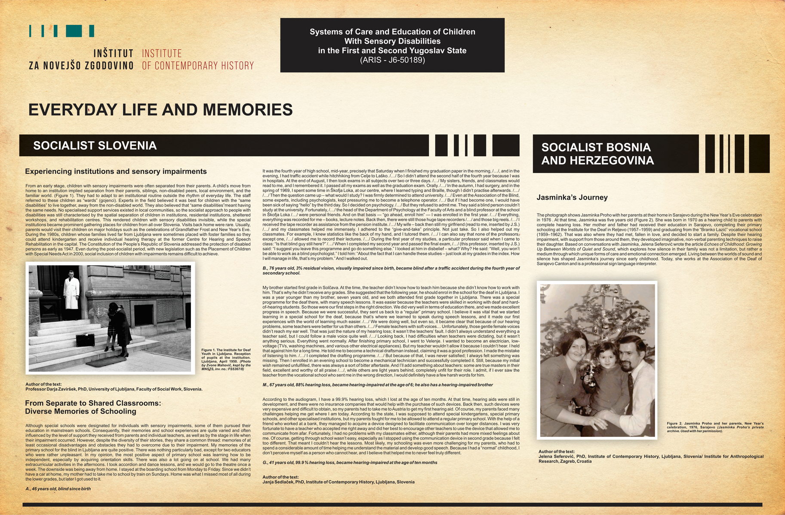

Darja Zaviršek
Janja Sedlaček
Jelena Seferović
Experiencing institutions and sensory impairments
From an early stage, children with sensory impairments were often separated from their parents. A child’s move from home to an institution implied separation from their parents, siblings, non-disabled peers, local environment, and the familiar world. (Figure 1). They had to adapt to an institutional routine outside the rhythm of everyday life. The staff referred to these children as “wards” (gojenci). Experts in the field believed it was best for children with the “same disabilities” to live together, away from the non-disabled world. They also believed that “same disabilities”meant having the same needs. No specialised support services existed in local communities, so the socialist approach to people with disabilities was still characterised by the spatial separation of children in institutions, residental institutions, sheltered workshops, and rehabilitation centres. This rendered children with sensory disabilities invisible, while the special institutions became prominent gathering places for children from all over Slovenia. Visits back home were rare. Usually, parents would visit their children on major holidays such as the celebrations of Grandfather Frost and New Year’s Eve. During the 1980s, children whose families lived far from Ljubljana were sometimes placed with foster families so they could attend kindergarten and receive individual hearing therapy at the former Centre for Hearing and Speech Rehabilitation in the capital. The Constitution of the People’s Republic of Slovenia addressed the protection of disabled persons as early as 1947. Even during the post-socialist period, with new legislation such as the Placement of Children with Special Needs Act in 2000, social inclusion of children with impairments remains difficult to achieve.

From Separate to Shared Classrooms: Diverse Memories of Schooling
Although special schools were designated for individuals with sensory impairments, some of them pursued their education in mainstream schools. Consequently, their memories and school experiences are quite varied and often influenced by the level of support they received from parents and individual teachers, as well as by the stage in life when their impairment occurred. However, despite the diversity of their stories, they share a common thread: memories of at least occasional disadvantages and obstacles they had to overcome due to their impairment. My memories of the primary school for the blind in Ljubljana are quite positive. There was nothing particularly bad, except for two educators who were rather unpleasant. In my opinion, the most positive aspect of primary school was learning how to be independent, especially by acquiring orientation skills. There was also a lot going on at school. We had many extracurricular activities in the afternoons. I took accordion and dance lessons, and we would go to the theatre once a week. The downside was being away from home. I stayed at the boarding school from Monday to Friday. Since we didn’t have a car at home, my mother had to take me to school by train on Sundays. Home was what I missed most of all during the lower grades, but later I got used to it.
A., 46 years old, blind since birth
It was the fourth year of high school, mid-year, precisely that Saturday when I finished my graduation paper in the morning, /.. .1, and in the evening, I had traffic accident while hitchhiking from Celje to Laško. /.../S o I didn’t attend the second half of the fourth year because I was in hospitals. At the end of August, I then took exams in all subjects over two or three days. /.../ My sisters, friends, and classmates would read to me, and I remembered it. I passed all my exams as well as the graduation exam. Orally. /.../ In the autumn, I had surgery, and in the spring of 1969,1 spent some time in Škofja Loka, at our centre, where I learned typing and Braille, though I didn’t practise afterwards. I.../ I . ../ Then the question came up - what would I study? I was firmly determined to attend university. /.../ Even at the Association of the Blind, some experts, including psychologists, kept pressuring me to become a telephone operator. I...I But if I had become one, I would have been sick of saying “hello” by the third day. So I decided on psychology. /.../ But they refused to admit me. They said a blind person couldn’t study at the university. Fortunately, /.../ the head of the Department of Psychology at the Faculty of Arts and a blind professor at the school in Škofja Loka /.../ were personal friends. And on that basis — “go ahead, enroll him” — I was enrolled in the first year. /.../ Everything, everything was recorded for me - books, lecture notes. Back then, there were still those huge tape recorders /.../ and those big reels. / . . . / 1 received the tape recorder as assistance from the pension institute. /.../ My wife - back then still my girlfriend (read to me, inserted by J.S.) /.../ and my classmates helped me immensely. I adhered to the “give-and-take” principle. Not just take. So I also helped out my classmates. For example, I knew statistics like the back of my hand, and I tutored them. /.../I can also say that none of the professors,« except one, I...I allowed me to record their lectures. /.../ During the first year of my studies, a particular professor said when I came to class: “ Is that blind guy still here?” /.../ When I completed my second year and passed the final exam, /.../ (this professor, inserted by J.S.) said: “I suggest you leave this programme and go do something else.” I looked at him in d isbelief- what? Why? He said: “Well, you won’t be able to work as a blind psychologist.” I told him: “About the fact that I can handle these studies - just look at my grades in the index. How I will manage in life, that’s my problem.” And I walked out.
B., 76 years old, 3% residual vision, visually impaired since birth, became blind after a traffic accident during the fourth year of secondary school.
My brother started first grade in Solčava. At the time, the teacher didn’t know how to teach him because she didn’t know how to work with him. That’s why he didn’t receive any grades. She suggested that the following year, he should enrol in the school forthe deaf in Ljubljana. I was a year younger than my brother, seven years old, and we both attended first grade together in Ljubljana. There was a special programme forthe deaf there, with many speech lessons. It was easier because the teachers were skilled in working with deaf and hardof- hearing students. So those were our first steps in the right direction. We did very well in terms of education there, and we made excellent progress in speech. Because we were successful, they sent us back to a “regular” primary school. I believe it was vital that we started learning in a special school for the deaf, because that’s where we learned to speak during speech lessons, and it made our first experiences with the world of learning much easier. I...I \Ne were doing well, but even so, it became clear that because of our hearing problems, some teachers were betterfor us than others. /.../ Female teachers with soft voices... Unfortunately, those gentle female voices didn’t reach my ear well. That was just the nature of my hearing loss; it wasn’t the teachers’ fault. I didn’t always understand everything a teacher said, but I could follow a male voice quite well. /...I Looking back, I had difficulties when teachers were dictating, but it wasn’t anything serious. Everything went normally. After finishing primary school, I went to Velenje. I wanted to become an electrician, lowvoltage (TVs, washing machines, and various other electrical appliances). But my teacher wouldn’t allow it because I couldn’t hear. I held that against him for a long time. He told me to become a technical draftsman instead, claiming it was a good profession. I made the mistake of listening to him. /.. ./ I completed the drafting programme. I...I But because of that, I was never satisfied; I always felt something was missing. Then I enrolled in an evening school to become a mechanical technician and successfully completed it. Still, because my initial wish remained unfulfilled, there was always a sort of bitter aftertaste. And I’ll add something about teachers: some are true masters in their field, excellent and worthy of all praise I...I, while others are light years behind, completely unfit for their role. I admit, if I ever saw the teacher from the vocational school who sent me in the wrong direction, I would definitely have a few harsh words for him.
M., 67 years old, 88% hearing loss, became hearing-impaired at the age of 6; he also has a hearing-impaired brother
According to the audiogram, I have a 99.9% hearing loss, which I lost at the age of ten months. At that time, hearing aids were still in development, and there were no insurance companies that would help with the purchase of such devices. Back then, such devices were very expensive and difficult to obtain, so my parents had to take me to Austria to get my first hearing aid. Of course, my parents faced many challenges helping me get where I am today. According to the state, I was supposed to attend special kindergartens, special primary schools, and other specialised institutions, but my parents fought for me to be allowed to attend a regular primary school. With the help of a friend who worked at a bank, they managed to acquire a device designed to facilitate communication over longer distances. I was very fortunate to have a teacher who accepted me right away and did her best to encourage other teachers to use the device that allowed me to communicate from afar. Fortunately, I had no problems with my classmates either, although their parents had more mixed feelings about me. Of course, getting through school wasn’t easy, especially as I stopped using the communication device in second grade because I felt too different. That meant I couldn’t hear the lessons. Most likely, my schooling was even more challenging for my parents, who had to spend a considerable amount of time helping me understand the material and develop good speech. Because I had a “normal” childhood, I don’t perceive myself as a person who cannot hear, and I believe that helped me to never feel truly different.
G., 41 years old, 99.9 % hearing loss, became hearing-impaired at the age often months
Jasminka's Journey
The photograph shows Jasminka Proho with her parents at their home in Sarajevo during the New Year’s Eve celebration in 1976. At that time, Jasminka was five years old (Figure 2). She was born in 1970 as a hearing child to parents with complete hearing loss. Her mother and father had received their education in Sarajevo, completing their primary schooling at the Institute for the Deaf in Reljevo (1957-1959) and graduating from the “Branko Lazič” vocational school (1959-1962). That was also where they had met, fallen in love, and decided to start a family. Despite their hearing impairment, with support from those around them, they developed imaginative, non-verbal parenting techniques to raise their daughter. Based on conversations with Jasminka, Jelena Seferovič wrote the article Echoes o f Childhood: Growing Up Between Worlds of Quiet and Sound, which explores how silence in their family was not a limitation, but rather a medium through which unique forms of care and emotional connection emerged. Living between the worlds of sound and silence has shaped Jasminka’s journey since early childhood. Today, she works at the Association of the Deaf of Sarajevo Canton and is a professional sign language interpreter.

